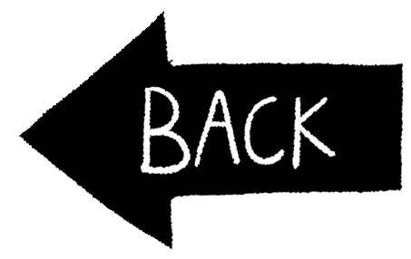
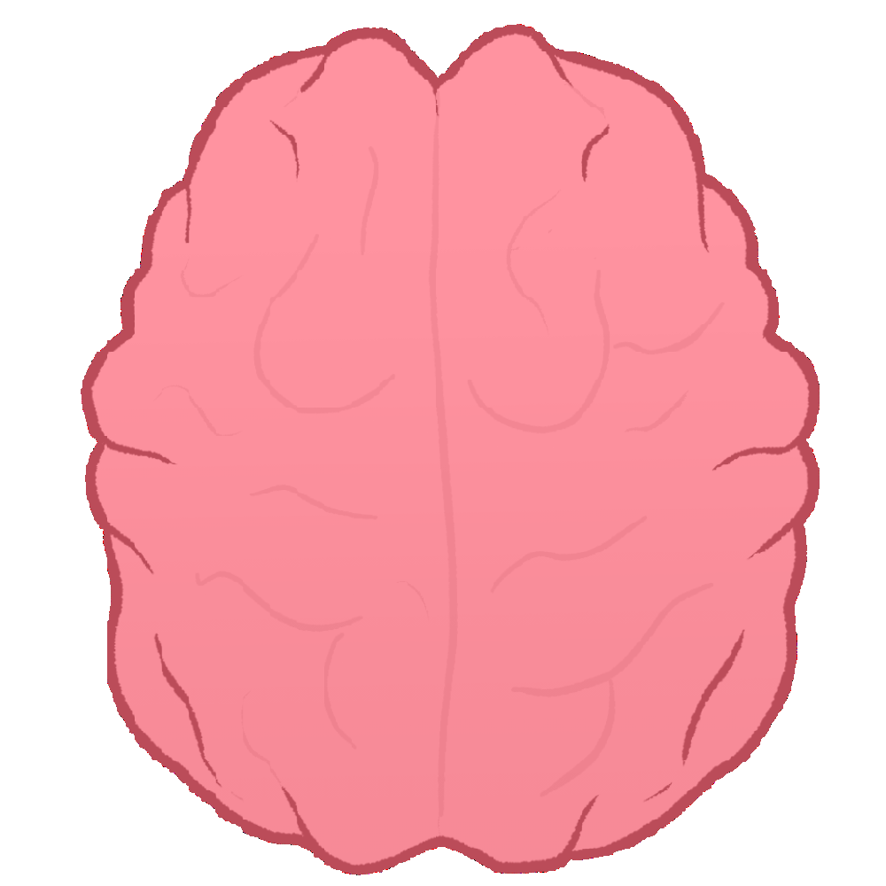
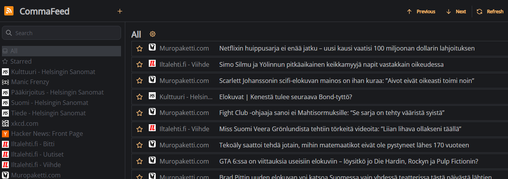
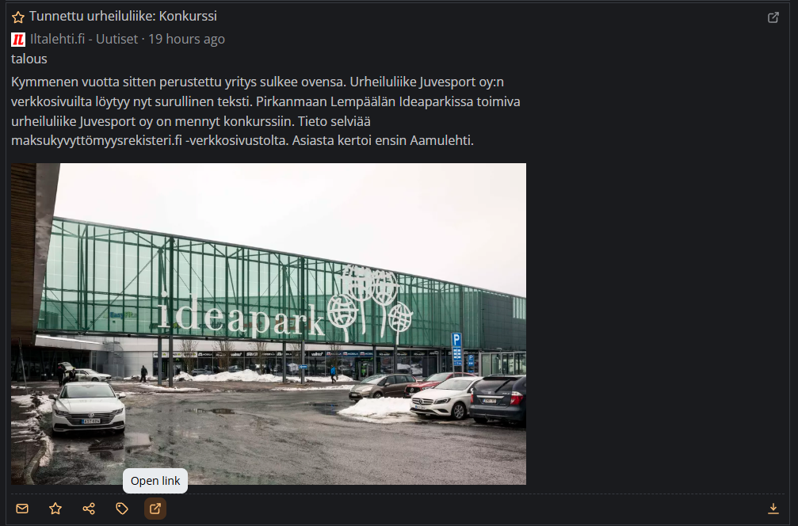
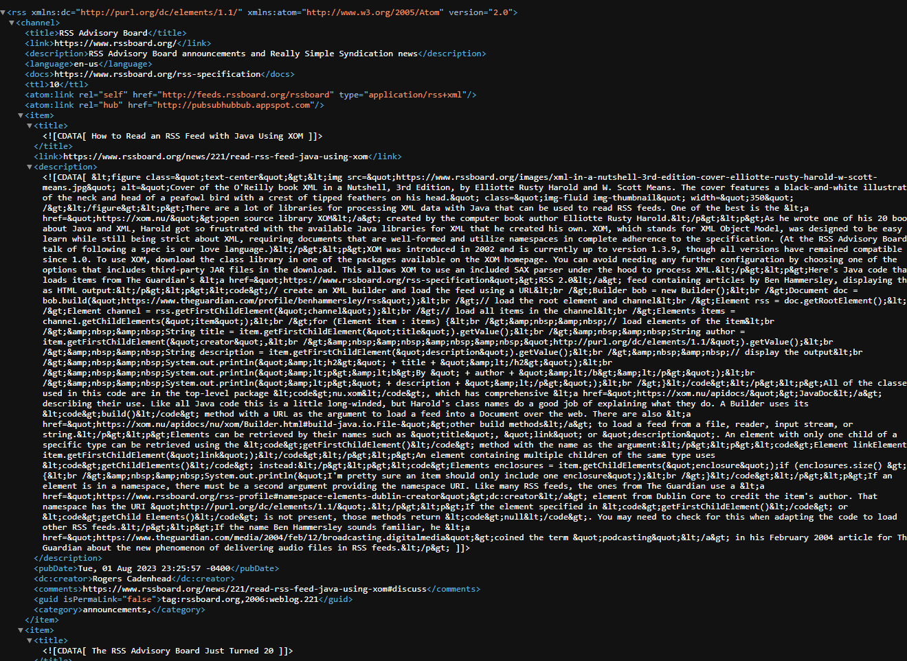
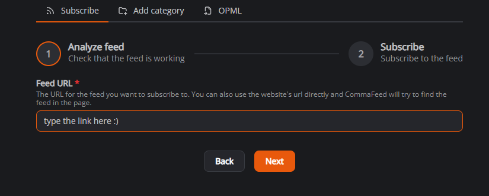
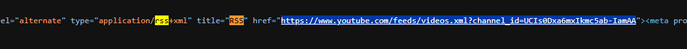

Hello internet content consumer.
I bet you just finished consuming your daily interweb content such as news headlines and videos off of Bluesky or Twitter or TikTok or some other social media platform.
May the all knowing Algorithm bless your feed with whatever it thinks is best for you.
I hope those articles were informative. I hope those videos were enjoyable and I HOPE THAT WE WOULD ALL WAKE UP AND STOP RELYING ON THE GAZILLIONDOLLARCOMPANYALGORITHMIC RECOMMENDATIONSYSTEMS THAT WILL DOOM US ALL. WE WILL SEE WHAT THEY WANT US TO SEE. WE WILL LEARN WHAT THEY WANT US TO LEARN. WE WILL CONSUME BASED ON THEIR RULES AND REGULATIONS.
And it's tiring...
But we're in luck because this issue was solved in the far far future of 1999! Let's talk about RSS.
All the blabbering aside, there's a good chance you already know about RSS since you're on someone's personal website. I'm writing this as a sort of an introduction to it in case someone doesn't know about it. (I just wanted an excuse to write something here for once)

RSS is a way of getting blogposts, articles and things like that all in one place. This way you don't have to visit individual websites to find all the stuff you want to look at.
First you're going to need a feed reader (which is the app or website you use to actually read the content). There's plenty to choose from but it's going to look something like this:

(Ignore the fact that these are in Finnish.) This reader (CommaFeed) shows the website the article came from, the title and when it was posted. When I click on one I can see a description of what it contains.

And if I want to read more, I can click on the "open link" button to see the whole article.
And that's the gist of it. I just use this to put a bunch of news in one place so I don't have to visit each and every website to find them.
Okay if you actually want to stop being a slave to the algorithm and try this for yourself, it's very simple (for the most part).
Step 1: Get a reader.
Doesn't matter which one. As long as you like it. I've used different ones on different devices.
The one I use the most right now is CommaFeed which is a browser based one. You can simply press the + button to add new feeds and they'll show up to the left side of your screen if you want to scroll them individually. (But I just tend to use the "All" option which puts everything on the same page.)
On my phone I have an app called Feeder (which works pretty much exactly the same way).
Step 2: Subscribe to feeds.
Feeds can usually be found from a button that looks like this:
This will usually take you to list of links to all the RSS feeds the website has to offer. (Or just directly to one of them). You want to look for something like this:

This is what the reader will use to update your feed. It's just a bunch of information related to the individual articles written in XML. You don't have to read it, just copy the url of the page with the XML and add that to your reader.

So adding feeds is really easy. However, this part is still a bit tricky. RSS is not a very widely used option for most people so a lot of companies have their feed links hidden in some weird corner on their sites. It might take a while to find them. (If they even have one.)
A good example of this is YouTube which does support RSS for individual channels. It's just a pain to get them. Basically you have to go the channel page, right click and select "View page source" (or do ctrl+u) and then use ctrl+f to search for RSS which should lead you to the XML link.

No idea why they couldn't just add a button in the corner or smt to get it

You may have noticed that some of my screenshots used the RSS feed for a website called "Manic Frenzy". Seems like a cool site. I wonder how the webmaster made one of those feed thingies.. OHWAIT that's this site! And I'm glad I wondered that for you because now I can tell you!
If you are a fellow websiter like so many of us are, you might want to consider making your own feed. This way if someone wants to know whenever there's new stuff for them to look at, they can just subscribe to your feed via their reader.
If you're a Neocities user like me, you actually already have one. Go to your profile and click the "Share" button and there should be a link to an RSS feed.
The issue with the built-in one is that every link has that lamedumbfucking title "[WEBSITE] has been updated" and this feed will include every update you make to the site, even if you don't want to have a separate announcement for it. (If it's something tiny like fixing a typo.)
Let's make our own!
This is pretty easy since XML is a markup language. It's really similar to HTML. Let's just make new file. Typical formats for feeds are .xml or .rss (Mine is MF.rss)
Here's a base for starting one:
<?xml version="1.0" encoding="UTF-8" ?>
<rss version="2.0" xmlns:atom="http://www.w3.org/2005/Atom">
<channel>
<title></title>
<link></link>
<atom:link href="" rel="self" type="application/rss+xml" />
<description></description>
<item>
<title></title>
<link></link>
<guid></guid>
<description></description>
<pubDate></pubDate>
</item>
</channel>
</rss>
So just like HTML, we have the opening and closing tags marked by the angle brackets
<tag>content</tag>
The channel tag has your actual feed. You need to add:
This is general information about the feed, not the individual items!
The atom tag is recommended to make your feed work on a wider selection of readers. Just define
href as a link to where your feed will be on your website
Example:
href="https://examplewebsite.kdt/feed.rss"
The item tag will have the actual content that will show up in the reader.
You can add as many as you want but it's good to keep it at around 15 per feed or less. This way only the new stuff will show up on the reader.
These are some common tags to add to an item. If you want to add more information, check out the RSS Advisory Board. They also have a tool for checking the validity of an RSS feed.
After adding a few items, the RSS feed is now complete! Now you can add your own little orange button somewhere on your site. Just make sure to do it exactly like most news companies and make it pretty much impossible to find!
And while you're at it, you can also add my feed to your reader if you want to see updates for the greatest website of [TIME].
yah thatsit. thanksforreading
[25th Nov. 2026]